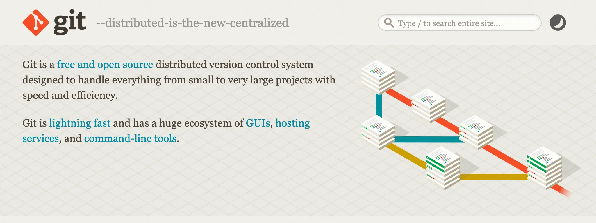
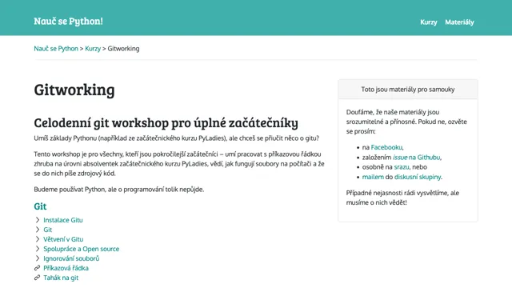
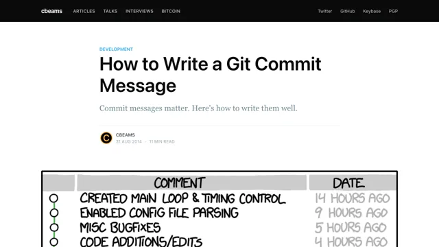
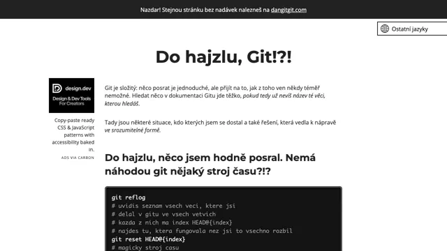
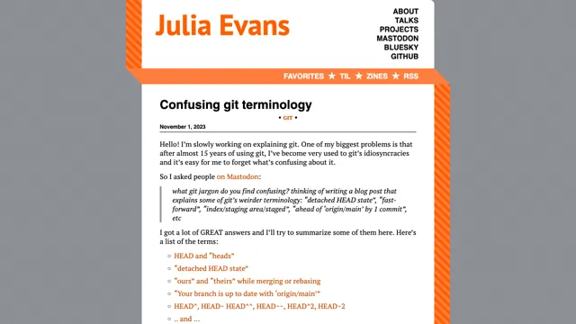
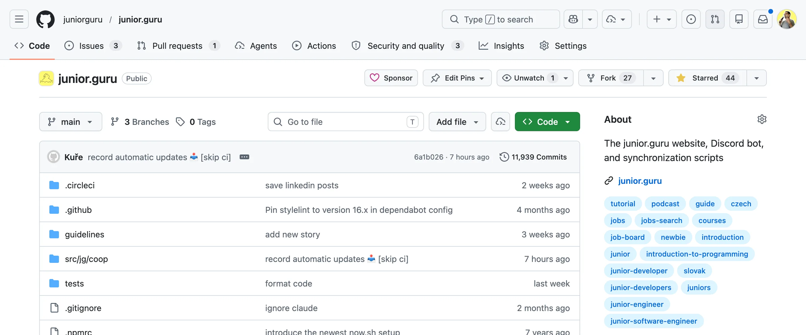
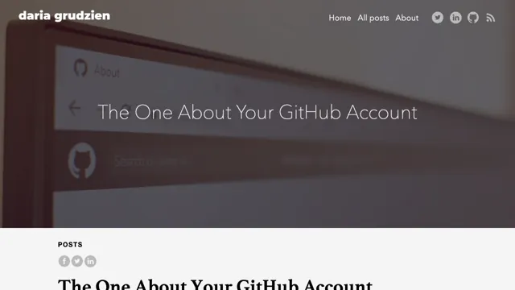
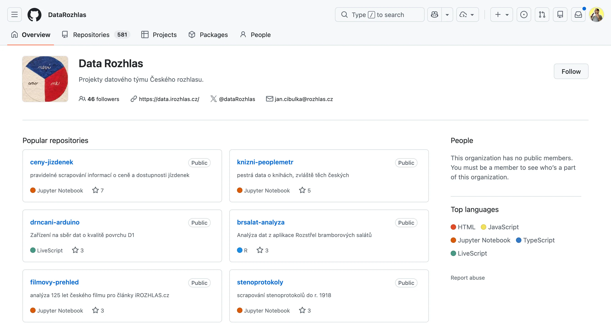

Git a GitHub#
Když děláš s kódem, bez Gitu se dnes nepohneš. Působí složitě, ale pro začátek stačí chápat, k čemu je, a ovládat pár příkazů. Ujasni si rozdíl mezi Gitem a GitHubem a osvoj si základy, které využiješ nejen při spolupráci s dalšími lidmi, ale i na vlastních projektech.
Co je Git#
Git je nástroj, který ti umožňuje sledovat historii změn v kódu a sdílet kód s dalšími lidmi. Je to program, který nainstaluješ do svého počítače a pracuješ s ním v příkazové řádce, nebo jej ovládáš např. prostřednictvím svého editoru.
Nejde o zkratku, takže se název píše opravdu Git a ne GIT. Slovo „git” v britské angličtině hovorově znamená „blbec”.
Git se dnes používá skoro v každé firmě. Nejvíc jeho funkce vyniknou při práci ve dvou a více lidech, ale hodit se mohou i jednotlivcům:
- Historie a záloha: Když si rozdrbeš kód, můžeš se s Gitem bezpečně vrátit k přechozí, funkční verzi.
- Sdílení: Díky GitHubu můžeš kód někomu na dálku ukázat, třeba aby ti dal zpětnou vazbu a poradil.
- Synchronizace: S Gitem jde kód bezpečně nahrávat, stahovat a měnit z různých počítačů.

Jak se učit Git#
Git je objektivně dost složitý a jeho příkazy nejsou moc intuitivní. I profíci si z hlavy běžně pamatují nanejvýš pět příkazů, které používají denně, ale u zbytku už musí hledat, jak se to správně používá. Stačí ti tedy pochopit, co vlastně Git dělá a možná i trochu jak to dělá, a potom zvládat aspoň pár příkazů.
Začni postupně, zatímco pracuješ na nějakém vlastním projektu. Po každé fungující změně si ulož verzi kódu jako commit. Klidně týdny dělej jen tohle. Pak se nauč, jak se dá vrátit k předchozím verzím.
Až budeš mít projekt trochu hotový, nahraj ho jako repozitář na GitHub a nauč se tam nahrávat další změny. Pak si zkus stáhnout cizí repozitář. A až potom koukej na větve a Pull Requesty. To stačí, nic víc se od juniorů neočekává.
Následující odkazy by ti měly dát dobrý základ. Něco jsou kurzy na YouTube, něco interaktivní hračky, které tě s Gitem naučí prakticky. A nakonec i kniha, ve které je úplně všechno.
Když budeš chtít pochopit nějakou konkrétní věc, třeba jak řešit merge conflict nebo co je .gitignore, tak si to nech vysvětlit od AI, nebo hledej klíčová slova na YouTube.
Srandovní kurz Gitu a GitHubu od yablka.
Kurz Gitu s Mišom
Kurz Gitu na Informatika s Mišom.
Lekce o Gitu z lekce The Missing Semester na MIT.
Hra, která ti pomůže pochopit vztahy mezi commity a větvemi.
Interaktivní vizualizace, kde si osaháš větve, merge i rebase.

Gitworking
České materiály k celodennímu workshopu pro začátečníky.

How to Write a Git Commit Message
Nauč se psát užitečné popisky ke commitům.
Bible o Gitu, zdarma online, částečně přeložená do češtiny.
Ovládání Gitu#
Git jde ovládat přes příkazovou řádku nebo přes nějaké klikací rozhraní. Prakticky každý editor na kód má na Git už něco zabudovaného v sobě, nebo si to můžeš snadno doinstalovat. Na ovládání Gitu klikáním není nic špatného ani neprofesionálního.
Počítej ale s tím, že příkazová řádka je „společný jazyk“ všech návodů. Klikací rozhraní každé vypadá a chová se trochu jinak. Když se však řekne git pull origin main nebo git commit --amend --no-edit, tak to všem funguje stejně.
A takovou jednoznačnost oceníš především když budeš hledat řešení svých problémů, ať už u AI, nebo člověka, který umí s Gitem, ale nezná tvůj konkrétní editor.
Řešení problémů s Gitem#
Asi neexistuje člověk, který někdy pracoval s Gitem a nikdy se do něj nezamotal. Je to úplně běžné a stává se to i zkušenějším.
Pokud se ti to stane, nech si poradit od AI. Vysvětli situaci a krok za krokem dojděte k nápravě. Ze zájmu si můžeš klidně projít Oh Shit, Git!?!, stránku, která zachránila několik generací, ale pokud něco zrovna řešíš, AI ti dnes už poradí úplně na míru pro tvou situaci.

Oh Shit, Git!?!
Jak se vymotat z různých situací s Gitem.

Confusing git terminology
Vysvětlení všech tajemných názvů, které Git používá.
Co je GitHub#
GitHub je úložiště kódu a něco jako sociální síť pro programátory. Kód tam jde poslat pomocí Gitu.
Od roku 2018 patří GitHub pod Microsoft. Další podobná úložiště jsou např. GitLab nebo Atlassian Bitbucket, a existují i řešení, která si může kdokoliv zprovoznit sám, jako Forgejo nebo Gitea. Všechny fungují na podobném principu:
- Samotný Git server. Dá se k němu na dálku Gitem připojit a kód tam poslat, nebo si ho stáhnout. Můžeš tam nahrát něco svého, nebo si stáhnout kód někoho jiného, kdo si tam na server veřejně odložil svůj repozitář se složkami a soubory.
- Klikací rozhraní ke Gitu. Máš možnost si repozitář prohlížet na webu. Vidíš i další věci z Gitu, jako historie změn, větve, commity, atd. Někdy můžeš přes prohlížeč posílat i změny. Mačkáš sice tlačítka, ale na pozadí se vlastně jen spouští příkazy z Gitu.
- Všechno kolem. Issues na to, aby někdo mohl nahlásit chybu, nebo sdílet nápad. Komentáře. Pull Requesty (někde se říká Merge Requesty), aby šlo poslat návrh na změnu kódu i do cizího repozitáře. Projekty… Možnost hostovat si tam statický web… Spouštění všelijakých automatizovaných testů… Tlačítko na vyžehlení prádla…
Historicky je GitHub nejoblíbenějším místem pro open source, takže tam najdeš nejvíc projektů a lidí. Většina kódu knihoven a frameworků, na kterých se staví software, se nachází právě tam. To má i své nevýhody. Když zrovna GitHub nejede, mnohdy si mohou programátoři udělat tak akorát procházku do parku.

Jak se učit GitHub#
Na GitHubu je milion funkcí a tlačítek. Lidé, kteří jsou v oboru už dekádu nebo dvě, se v něm orientují dobře jen díky tomu, že jim to pod rukama rostlo postupně. Je přirozené, pokud tobě to přijde zahlcující a nepřehledné.
Je to ale podobné jako s Gitem. Nikdo neočekává, že budeš hned znát všechno. Pro začátek stačí vytvořit si profil, umět založit repozitář a nahrát tam kód svého projektu, vědět co jsou Issues, co je Pull Request, a jak je vytvořit. Pokud se budeš umět popasovat i s code review, tak to je příjemný bonus.
Když budeš chtít pochopit nějakou konkrétní věc, nech si to vysvětlit od AI, nebo hledej klíčová slova na YouTube. Pro tyhle případy se ti bude hodit vědět, že způsob přispívání do projektů na GitHubu se označuje souhrnným názvem GitHub Flow. Najdi si to a zkus to pochopit.
Pokud se dostaneš do firmy, kde se nepoužívá konkrétně GitHub, znalost těchto konceptů se ti bude hodit i pro libovolný podobný systém.
Srandovní kurz Gitu a GitHubu od yablka.

The One About Your GitHub Account
Jak přistupovat ke svým projektům a profilu na GitHubu
Dávej kód na GitHub#
U začátečníků platí, že nemají co schovávat a měli by světu ukázat co nejvíce toho, co dokázali vytvořit, nebo co zkoušeli řešit. Můžeš tím jen získat.
No a GitHub je příhodné místo, kam všechny své projekty a pokusy nahrávat. Zároveň tam mají své projekty i všichni ostatní a jde tam spolupracovat s lidmi z celého světa. Je to hřiště pro programátory, kde si každý experimentuje na čem chce.
Takže si vytvoř profil a všechno naházej do repozitářů. Naučíš se lépe ovládat Git a budeš moci svůj kód ukázat, když budeš chtít zpětnou vazbu, nebo potřebovat pomoc na dálku.
Máš strach, že někdo tvůj kód uvidí a pomyslí si, že nic neumíš? Přečti si GitHub jako polička v dílně, snad to rozptýlí tvoje obavy.
Čti kód na GitHubu#
Většina otevřeného kódu na světě je na GitHubu. Využívej jeho vyhledávání a pokukuj po inspiraci, jak se dá co řešit.
Můžeš koukat pod ruce různým projektům a organizacím, třeba datovým novinářům z Českého Rozhlasu, Hlídači Státu, české Python komunitě, nebo třeba i junior.guru.
Když vyhledáš vhodný výraz, můžeš se třeba podívat, jak někdo jiný používá konkrétní framework, knihovnu, funkci. Nebo hledat nezabezpečené projekty jiných lidí a připadat si jako velký hacke… ehm, upozorňovat je, že by si to měli opravit.
Pamatuj ale na to, že najdeš i spoustu nekvalitního kódu, takže vždycky zvaž, jestli se tím, co vidíš, chceš opravdu inspirovat. Když najdeš něco, čemu nerozumíš, konzultuj to v komunitách, nebo aspoň s AI.
No a nemusíš jen koukat, do open source projektů můžeš i přispět! To, že jsi na začátku, neznamená, že nemůžeš objevit chybu nebo opravit větu v dokumentaci. A odvaha být v tomto směru aktivní se u juniorů dost cení.

GitHub a pohovory#
Pokud tě někdo straší, že si tvůj GitHub budou procházet náboráři a máš jej proto mít sterilně dokonalý, nenech se tím zmást. Recruiteři kód nečtou.
Manažeři a senioři občas ano, ale podstatné je, jestli jim dáš v CVčku pod nos konkrétní projekty, kterými se chceš chlubit, nebo jim předhodíš jen tak celý profil a necháš je tápat.
Sekce GitHub jako vitrínka v návodu na GitHub profil nebo Projekty v návodu na CV ti dají praktické tipy, jak GitHub používat jako dílnu a zároveň zajistit, že pohovorující nebudou zakopávát o nepořádek.
Máš otázky? Chceš probrat svou situaci?
Na junior.guru Discordu si pomáhá 244 lidí, které zajímá svět IT juniorů. Začátečníci, kteří hledají komunitu a podporu. Senioři s chutí sdílet své zkušenosti. K tomu pravidelné online akce a mnoho dalšího.
Konkrétně v kanálu #Git - nástroje, postupy, GitHub/Gitlab apod. se v poslední době napsalo 1.745 písmenek měsíčně.